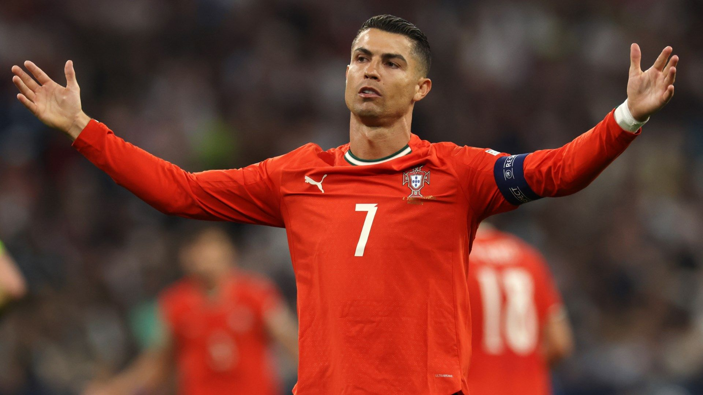

Hogging Penalties & Free-Kicks — The Lone-Wolf Selfishness
Penalty monopoly, hard proof: In Real Madrid's 'BBC' era Ronaldo monopolised virtually all penalty duties. Gareth Bale publicly complained: 'I competed with him on free-kicks, I always won in training, but in matches the penalties and free-kicks all went to him, it's not fair.' One complaint that said everything about life in a superstar's shadow.
Free-kick hegemony: Data shows Ronaldo took 135 shots in a single club season, while Bale took 50 and Benzema 60. Free-kicks were his 'private reserve' — no matter how unreasonable the distance or angle, he would stand over the ball in his signature pose while teammates watched.
The cold war with Bale: In the 2014-15 season Bale was repeatedly captured looking unhappy when Ronaldo lined up free-kicks, the two's contest over duties almost white-hot. The media calculated that on conversion, Bale's free-kick success rate was far higher than Ronaldo's, but the ball never went to him.
Benzema's forbearance: As a 'supporting' forward Benzema long played Ronaldo's foil and screen-wall. Cameras once caught Benzema scoring, only for Ronaldo to complain to the referee about not getting the assist — team spirit reduced to a punchline.
Stats over team: Ronaldo's obsession with his personal goal tally bordered on the pathological; he was once visibly unhappy leaving the pitch after a big win in which he had not scored. Real legend Guti said outright: 'He sometimes rates his personal stats above the team's win.' That self-centred value system poisoned the dressing-room atmosphere.
Continued at Portugal: At international level Ronaldo likewise monopolised penalties and free-kicks. At the 2022 World Cup he missed a penalty that disrupted Portugal's rhythm; at Euro 2024 he missed a penalty and wept on the pitch, placing personal pride above the team as teammates had to come and comfort him.
The price of selfishness: When a player puts 'my goals' above 'our wins', so-called leadership becomes a fig leaf for autocracy. Bale eventually chose to leave, Benzema shouldered the blame for years, and the BBC trio's breakup was not unconnected to this monopoly on resources.